NO HABLO ESPANOL
Nous sommes actuellement à Potosi en Bolivie une ville minière à un peu plus de 4000 mètres d'altitude.
Pour resumer un peu notre périple nous sommes arrivés à Buenos Aires le 7 janvier. Grosse chaleur qui contraste avec le petit 7 degrés de Paris. Un peu encombrés par nos vélos empaquetés nous avons visité la ville en quatrième vitesse (cela prend du temps d'apprendre à prendre son temps) puis départ pour Posadas dans le nord. L'idée était de rejoindre Iguazu en vélo à partir de là... La première journée de vélo fut épique !
Nous nous sommes heurtés à la chaleur accablante (39 degrès à l'ombre (#ilnyapasdombre), une succession de montées interminables et descentes toujours trop courtes, frôlés toutes les trente secondes par des camions et des bus à roulant à toute berzingue... La route ressemble plus à une autoroute (sans bande d'arrêt d'urgence) qu'à la nationale tranquille que j'imaginais. Et pour couronner le tout une tempête tropicale en milieu d'après midi qui a fait tomber plus d'eau en 30 minutes que 20 années de crachin parisien. De mémoire cela restera (jusqu'a présent) la pire journée de vélo de ma vie! - et c'était la première pour Marie...
Le lendemain après avoir vérifié qui n'y avait pas de routes alternatives nous avons décidé de rejoindre Iguazu en Bus... Les chutes d'Iguazu se passent de commentaires. C'est au delà du grandiose. Puis direction Salta au nord-ouest du pays ou nous espérons que l'altitude fera redescendre la température et nous permettra de faire un peu de vélo.
De Salta (1000 mètres d'altitudes) nous sommes montés jusqu'à la Bolivie en passant par la quebrada de Humahuaca. La montée en pente douce (parfois) nous à permis d'arriver à un peu plus de 4000 mètres d'altitude relativement en douceur. C'est très agréable de voir les paysages changer rapidement (une végétation florissante en bas puis progressivement des vallées encaissées hérissées de cactus puis les paysages de montagne arides. Le dernier jours avant d'arriver à la frontière bolivienne nous avons fait 110km (à près de 4000 mètres d'altitude) la resistance et la volonté de Marie ne fait que m'étonner. 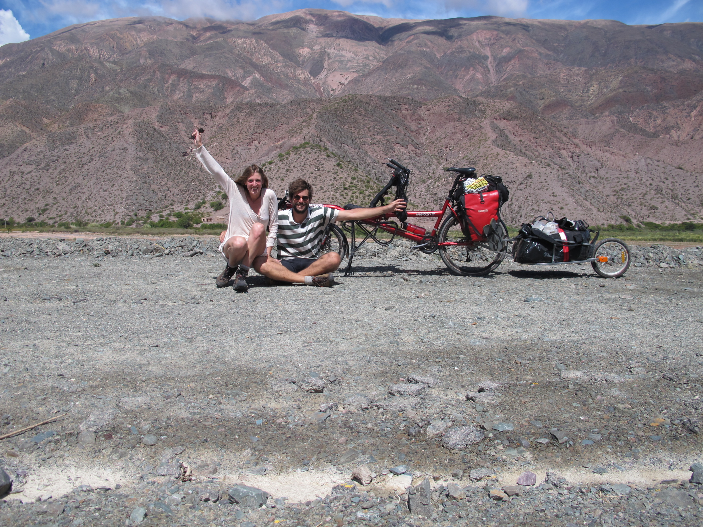
A la (triste) ville frontière de la Quiaca nous avons rencontré deux familles super sympas de cyclos qui font le tour du monde en respectivement 2 ans et 1 an. Ils voyagent avec le même vélo que nous (le tandem pino Haze pour les connaisseurs) et ont chacun deux enfants dont Ewen 9 ans qui a son propre vélo! Il aura fait le tour du monde sur son vélo à 9 balais!!! Du coup nous avons décidé de faire un petit bout de route ensemble jusqu'à Tupiza où nous avons mutualisé un tour en 4x4 dans le sud lipez. Si il y a un truc a voir dans sa vie c'est bien cet endroit! Ce sont des paysages ahurissants, des lagunes bleues, roses ou blanches où barbotent des hordes de flamands roses, fument des geysers et coulent des sources d'eaux chaudes. Le tout surmonté de volcans enneigés à plus de 6000 mètres. Nous ne nous en sommes toujours pas remis.
Ensuite nous avons entrepris de traverser le Salar d'Uyuni en vélo contre l'avis de tous les boliviens auxquels nous avions demandé conseil... nous aurions dû les écouter... après quelques kilomètres il faut se rendre à l'évidence, la fine pellicule d'eau au dessus du Salar (c'est la saison des pluies) rend le sel très mou et nous oblige à pousser le vélo ce qui, avec la remorque, deviens très vite harassant... nous faisons demi-tour (après avoir pété quelques rayons et sous une pluie diluvienne) et décidons de changer de planning pour se rendre à Potosi où nous sommes à présent. Je vous passe le trajet de Uyuni à Potosi où les cols à 4000 s'enfilent comme des perles simplement entrecoupés de fausses descentes (un concept bolivien). Et surtout la retournette balayette du derailleur qui nous oblige à nous faire ramasser par un pick-up à 40 kilomètres de l'arrivée....
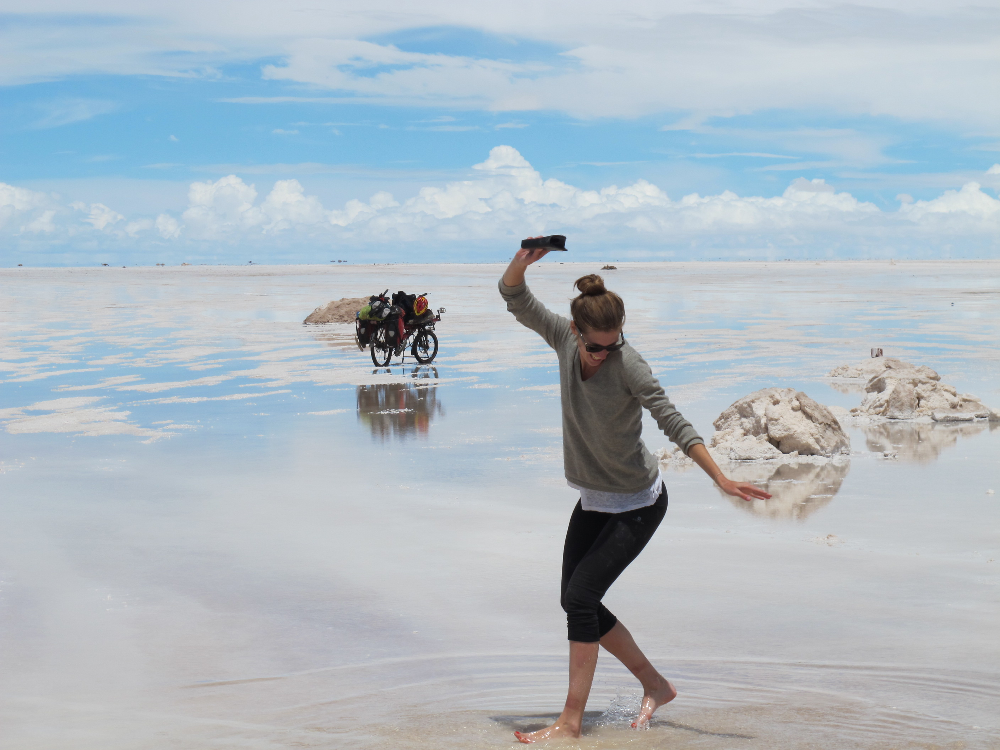Demain nous allons faire une pas chassé en direction de Sucre (en bus) pour la journée puis nous reprendrons la route vers la Paz en passant par le carnaval d'Oruro (qui est le deuxième plus grand d'Amérique latine parait-il).
Nous vous embrassons fort. Vous nous manquez. Prenez soin de Paris en notre absence.
7 fevrier 2015SHOOTING DOGS
Je vous avais laissé à Potosi, la ville des mineurs où la légère claustrophobie de Marie nous a aidé à trancher le dilemme éthique que nous posait la visite des mines en activité.
Après le pas chassé en direction de Sucre (la capitale) nous nous sommes dirigés vers la ville d'Oruro pour le carnaval. Sur la route nous avons rencontré Johannes, un allemand complètement roots qui voyage depuis 8ans. Nous avons fait un bout de route avec lui. A Oruro le carnaval consiste en une ribambelle de mecs et de femmes qui défilent dans des costumes hallucinants dont la perfection contraste vraiment avec l'a-peu-près de rigueur en Bolivie. Cependant les longues journées de solitude passées en vélo nous rend la très forte affluence difficilement supportable et nous fuyons vers la Paz. En bus pour éviter l'intoxication a respirer les fumerolles des très nombreux camions et bus qui se rendent à la capitale économique.
A la Paz c'est encore le carnaval tout est fermé et les hordes d'étudiants balancent à tour de bras leurs bombes à eau et de la neige artificielle sur tous les passants. Ce sont de véritables batailles rangées dans la ville. C'est rigolo; le premier jour...
Dans la ville nous logeons à "La casa des ciclistas" une espèce d'auberge espagnole pour les cyclistes. Le nom casa est légèrement abusif dans la mesure ou il n'y a pas a proprement parler de lits. Mais l'ambiance est super sympa et nous y rencontrons des gens de tous les pays qui voyagent en vélo ce qui nous permet d'échanger les topos et les bons plans sur la route.
A partir de la Paz nous partons pour une expédition de trois jours (dont un jour d'acclimatation ) à l'assaut du Huayna Potosi. Pour le dernier jour départ à 1h du matin après 5heures de précieux non-sommeil pour un peu plus de 5h30 de montée dans la nuit noire. Au dessus de la jungle, en contrebas, les orages lancent des éclairs qui illuminent périodiquement le ciel et nous donnent d'apercevoir, une fraction de seconde, le glacier sur lequel nous évoluons.
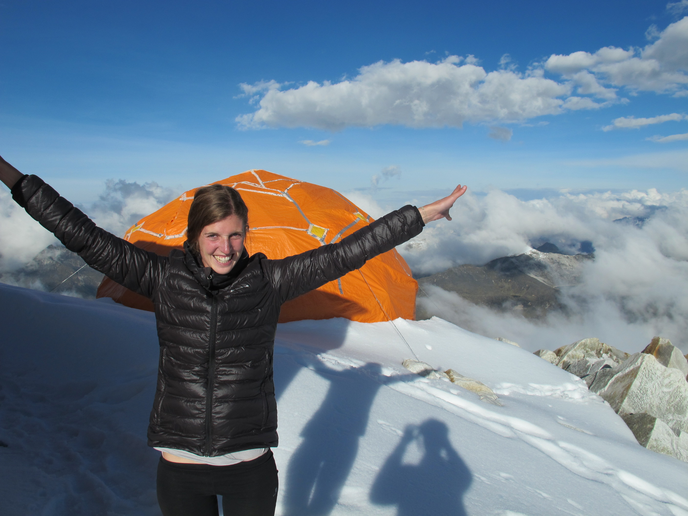Nous avançons relativement lentement pour garder nos forces et regardons mi effarés mi honteux les cordées nous doubler les unes après les autres. La moitié abandonnera quelques centaines de mètres plus haut. la tortue gagne toujours! Car oui la tortue est arrivée au sommet - 6088m! Complètement explosés de fatigue mais super fiers de nous avec en prime une vue imprenable sur l'Altiplano et sur le lac Titicaca plusieurs milliers mètres en contrebas.
Histoire de ne pas se ramollir nous sommes repartis en vélo le surlendemain pour une remontée cauchemardesque de la ville de la Paz en direction du lac Titicaca. Lac mythique qui culmine à 3800m d'altitude. La route serpente sur les crêtes entre deux rives du lac, c'est absolument sublime! Juste avant d'arriver dans la ville de Cobacabana et ses régiments d'argentins désargentés qui comptent sur les autres voyageurs et sur leurs piètres talents de musiciens pour payer des vacances à eux à leurs chiens crasseux.
Dans un café nous manquons de nous faire embarquer par les flics car notre visa est périmé. A mi-chemin ils changent d'avis et nous laissent tranquilles... la cohérence n'est apparement pas le principal soucis des flics boliviens mais cela fait bien notre affaire!
Ensuite nous traversons enfin la frontière pour le Perou après 35jours en Bolivie. Le pays nous aura laissé un souvenir impérissable. Les bivouacs en pleine montagne, le sud Lipez incroyable, l'impression de toujours avoir atteint le bout du monde et les gens toujours bienveillants même si la communication n'est pas toujours évidente (bien que nous ayons beaucoup progressé en espagnol).
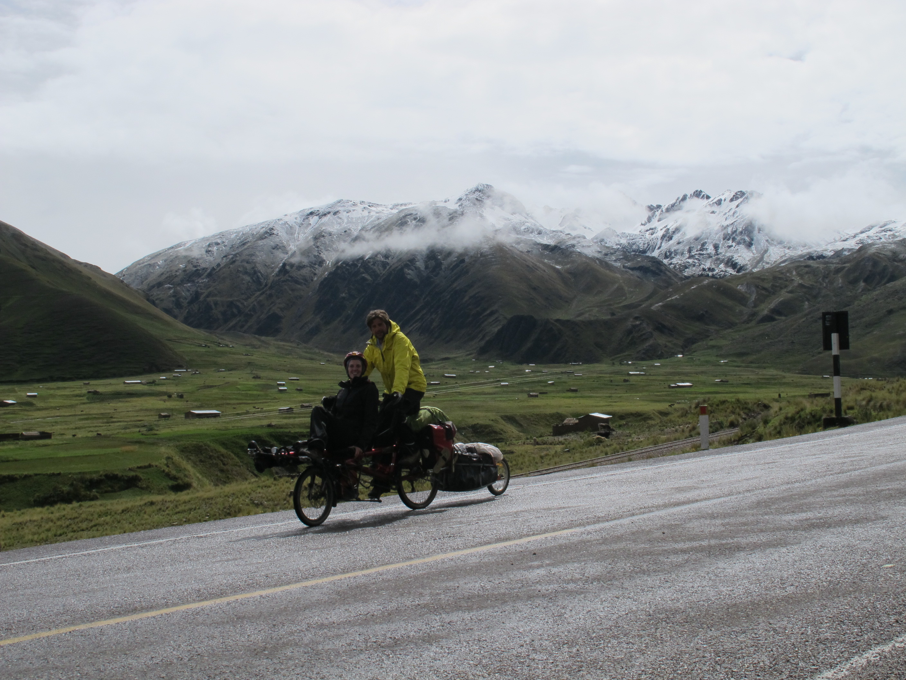En entrant dans ce nouveau pays nous faisons connaissance avec ses habitants. Ma foi fort sympathiques malgré les ambigus "hola gringos!" qu'ils lancent sur notre passage. Mais nous faisons surtout connaissance avec les TRES nombreux clébards péruviens. Une race incroyablement hargneuse dont l'obsession semble être de croquer les mollets des cyclistes de passage. C'est systématique, à chaque traversée de village nous voyons quatre ou cinq chiens qui se ruent vers nous, les babines retroussées et les crocs en avant. C'est très désagréable et complètement flippant! Mais nous avons mis au point une parade:
Figurez vous Marie, à l'avant du Pino, la bave aux lèvres et une pierre grosse comme le poing dans chaque mains. Au moindre mouvement d'un de ces quadrupèdes au bord de la route nous caillassons gaiement. C'est le tir aux pigeons et oui! Nous y prenons du plaisir! BB si tu nous lis, je fais du 43 en bébé chien.. donc si tu m'en trouve deux pareils...
Voila.. hem... Après ce passage qui me vaudra surement une comparution au tribunal international du droit canin dans quelques années je continue mon récit...
Arrivés à Cusco après avoir longé le lac Titicaca, visité les iles flottantes de Puno, retrouvé les familles avec lesquelles nous voyagions en Bolivie et s'être baignés dans les sources chaudes d'Aguas Calientes nous sommes arrivés à Cusco. Une ville fort jolie où le Big Mac du MacDonald nous est apparu comme une oasis impromptue au milieu d'un désert de "pollo con arroz" et où nous nous reposons un peu avant d'entamer un trek de cinq jours en direction du Machu Picchu.
Le sentier, qui tourne autour d'une montagne majestueuse: le Salkantay, a la particularité de passer par un col à 4600m d'altitude avant de plonger dans la jungle. C'est vraiment incroyable de voir la végétation qui change de fond en comble, des papillons grands comme ma main, des fruits tropicaux sur les arbres et surtout, de renouer avec l'air chaud. Sensations que nous n'avions pas eues depuis presque deux mois que nous naviguions sur l'Altiplano.
Le teck se termine par la visite féerique du Machu Picchu. Le lieu est inouï! les ruines en super état sont posées entre deux montagnes en surplomb de falaises vertigineuses. C'est absolument incroyable et l'affluence que nous redoutions ne gâche rien. Nous restons la journée sur le site à faire de longues balades et des siestes (et oui Marie n'a pas changé) sur les anciennes terrasses de culture.
Voila, nous sommes dans le bus pour Lima. Car nous avons décidé que trois jours ne suffiraient pas pour parcourir les 1000km qu'il nous restent à faire avant de chopper notre avion. Bus de luxe, écran personnel, siège inclinable a 160°, wifi... parfois on se demande pourquoi on s'inflige de voyager à vélo. :)
Bises à vous tous, Vous nous manquez.
16 mars 2015KISS AND FLY
Hello les amis ! Voici les dernières nouvelles de notre couple à la dérive.
Je tiens à prévenir que si, jusqu'à présent, le récit de nos barbotages sous la pluie dans les montagnes boliviennes n'était pas de nature à vous faire regretter vos bureaux douillets. La suite risque d'être un peu plus difficile... mais n'ayez craintes je serai doux, j'aurai du tact...
De Lima où rien de palpitant nous est arrivés mis à part un adieu déchirant à notre boisson fétiche : l'Inka cola; nous décollons pour Santiago du Chili. Libérés de nos vélos à la consigne de l'aéroport et sachant la ville peu propice à une visite rapide nous sommes allés voir la ville de Valparaiso. Un immense cirque donnant sur le pacifique, autrefois un port puissant et aujourd'hui une ville pauvre et pleine de charme avec ses maisons en tôles colorées entre lesquelles serpentent des ruelles escarpées recouvertes de graffitis.
Puis, après ce très court séjour au Chili, départ pour l'Australie ! Le rêve de Marie ! Au passage j'ai réussi le plus grand tour de passe-passe de l'histoire des goujateries. J'ai fais disparaître le jour des 25 ans de Marie ! En effet nous nous sommes envolés le 22 mars au soir et arrivés le 24 au matin. Pouf pouf le jour d'anniversaire de Marie s'est évaporé entre deux coupes de champagne au dessus de l'ile du jour d'avant. Magique non ? Je ne vais pas m'attarder le sujet est encore sensible...
Sydney. Le coup de cœur pour tous les deux. Une très belle ville, une vraie, une où tu peux même mettre le papier dans les toilettes. Avec des cafés en terrasse et de belles balades sur le port. Imaginez Paris avec, à la la station Charles Michel, à la place du bricomarché, une plage sublime, paradis pour les surfeurs et royaume des bikinis.
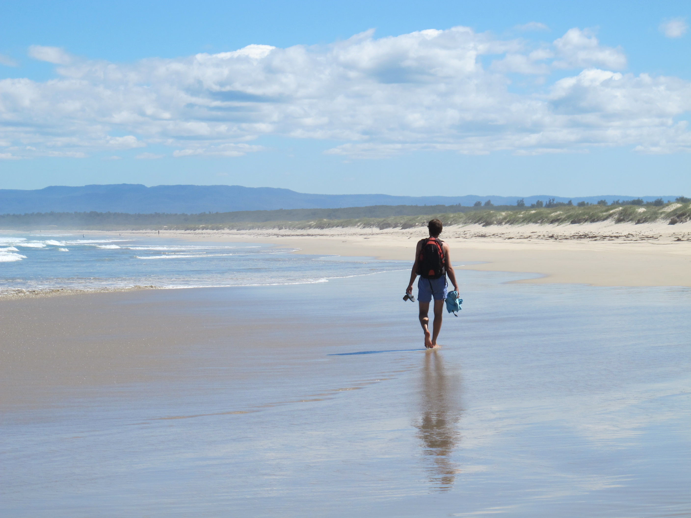
A partir de Sydney, nous louons une voiture pour visiter les environs pendant quelques jours. A l'issue d'un apprentissage chaotique de la conduite à gauche nous nous retrouvons (en vie) à Jervis Bay dans un camping semi sauvage au bord d'une plage déserte à faire griller une énorme pièce de bœuf au barbecue sous les regards curieux des kangourous peu farouches qui se baladent librement autour de notre tente. Pour une carte postale de l'Australie on aurait difficilement trouvé mieux !
Une dernière nuit en camping sauvage dans notre Honda en plein cœur des quartiers chics de Sydney et c'est le départ pour les Philippines. Kiss and fly !
Arrivés à Manille. De nuit, plus de doutes c'est fini l'Australie !! Nous sommes accueillis par une chaleur moite, un fourmillement de tricycles et un embouteillage monstre. Le chauffeur de taxi nous explique que c'est la semaine sainte et que les philippins, très croyants, font la tournée des églises. #fun. Il nous raconte également que le lendemain au cours des cérémonies du vendredi saint plusieurs personnes vont volontairement se faire crucifier. Oui oui vous avez bien lu ! Une crucifixion volontaire avec plantage de clous et tout le tintouin. Et pour assaisonner ce tableau un peu fade une autre sorte de malades vont se flageller jusqu'au sang en lançant des incantations à leur Dieu miséricordieux...
Alléchés par la perspective de ce merveilleux spectacle nous fuiyons rapidement en ferry vers l'île Negros pour un périple de deux semaines dans l'archipel des Visayas. La seule scène de torture à laquelle nous assisterons sera le karaoké du bord.
A Bacolod nous recommençons à faire du vélo. Avec enthousiasme car cela faisait presque 3 semaines que ceux-ci était trimballés dans des cartons. 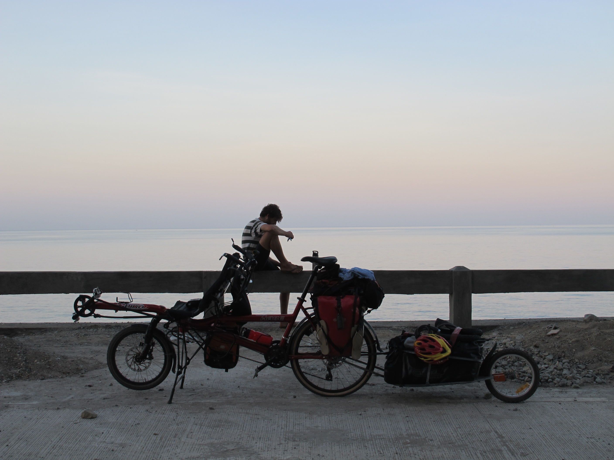 Nous nous rendons rapidement compte qu'il n'est pas possible de faire de grandes distances pendant la journée, à partir de 10h du matin la température navigue entre 35 et 40 degrés. Qu'a cela ne tienne nous partirons le matin à 4h30, à la frontale ! Il est amusant de voir les philippins se réveiller, prendre leur petit déjeuner , même parfois leurs douches à même la rue et se frotter les yeux de surprise au passage de notre équipage. Nous n'avions jamais été aussi bien accueillis par la population, nous sommes constamment salués avec de grands sourires et des "Nice bike !" lancés à la volée. Marie reprend son rôle et salue la foule du haut de sa papamobile, dans les côtes le sourire est forcé mais le cœur y est.
L'après midi nous nous reposons dans des "beach resorts" sortes de plages privées qui louent parfois des chambres. Les plages de l'île sont paradisiaques ! Sable blanc, mer turquoise et lait de coco dans la main droite. Cela contraste tellement avec la fournaise que nous subissons le matin que nous avons souvent beaucoup de mal à imaginer qu'il s'agit d'une seule et même journée. Les jours schizophréniques s'enchaînent et les plages sont de plus en plus belle et les côtes de plus en plus raides. Jusqu'à l'île de Siquijor, en une sorte d'apothéose. Un véritable joyaux (Google it).
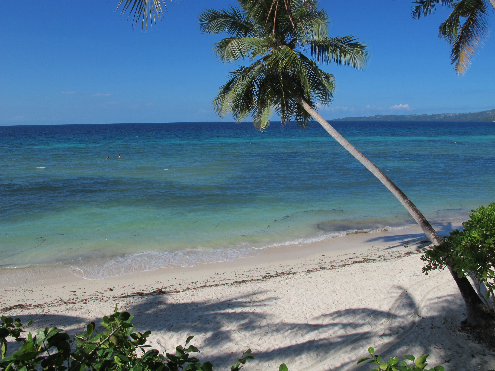Nous sommes maintenant dans le bateau qui nous ramène à Manille. Il est 5h du matin. Le haut parleur grésille, volume au maximum, la prière du matin récitée par le chef de cabine. Encourageant...
Demain nous partons rejoindre les parents de Marie à Jakkarta.
Allez salut ! Vous nous manquez.
15 avril 2015NOS JOURS HEUREUX
Salut les amis !
Nous vous écrivons du fin fond du Laos après 3 jours de vélo vraiment éprouvants dans les montagnes spectaculaires. Les gens adorables dans les villages Hmong que nous avons traversés, les pics qui se succèdent sur plusieurs plans chaque fois un peu plus estompées par la brume. Les falaises karstiques coiffés de jungle qui sortent brutalement de terre et donnent aux paysages une brutalité poignante ; nous ont quelque peu consolés de nos violents efforts.
Mais revenons au début car cela fait un petit bout de temps que nous avons été négligents sur les nouvelles.
Après les Philippines nous passons une semaine de rêve à Bali avec Eric et Maic (les parents de Marie) entre piscine, temples Boudhistes, embouteillages, petits déjeuners gargantuesques, shopping et cocktails... une débauche de luxe pour nos estomacs saturés de riz au poulet. Marie, la plus heureuse sur terre a pu trouver chez ses parents l’oreille attentive que j’échoue parfois à être.
Bali est une très belle île et la culture hindouiste très vivace en fait une oasis de fraicheur dans une Indonésie musulmane et moralement très rigide. Malheureusement cette spécificité a contribué au fort développement d'un tourisme de masse qui lui retire un peu de son âme.
Pour s’enfoncer encore un peu plus dans la décadence, nous avons été invités par un couple d’amis sur l’île voisine de Lombok. Dans une villa somptueuse où nous avons été reçus comme des rois (au sens littéral !). Entre deux sorties snorkling et catamaran nous étions conviés à des diners princiers : homard au barbecue, concert privé et feux d’artifice sur la plage ! Sans doute de nos soirées les plus mémorables. Safia et Francois ont poussé la générosité jusqu’à inviter pour quelques jours notre ami Baptiste que nous devions retrouver sur l’île.

Il était temps de retourner sur terre ! Après un saut à Jakarta où notre vélo était généreusement gardé. Nous nous envolons directement pour Kuala Lumpur.
Changement de standing la première nuit nous dormons en "couch surfing" chez Akmar un détaillant de vélo. Ici le rôle du canapé sera joué par le sol de son atelier, entre les clefs à mollettes nous devons attendre chaque soir que celui-ci et ses apprentis aient fini de travailler (vers 2h du matin) pour pouvoir dormir. Mais la générosité d’Akmar qui nous assiste une journée durant sur les réparations de notre vélo qui tombe en ruines (et hop un quatrième dérailleur !), nous fait visiter la ville en vélo et refuse systématiquement que nous payons nos repas nous laissent augurer de l’attitude des malaisiens à notre égard.
Le pays est étonnant, très développé il approche de très près des standard occidentaux en terme d’infrastructures et d’habitations; les chaines internationales sont omniprésentes, le tourisme local bat son plein et pourtant les prix restent très bas. Cela fait bien notre affaire ! En revanche le vélo est très chaud… très très chaud… Nous traversons les interminables plantations de palmiers et le soleil devient notre pire ennemi... Même si nous partons très tôt le matin celui-ci nous assassine de ses rayons à partir de 8h. Du coup nous regrettons un peu d’être allé visiter des plantations de thé de Cameron Highlands qui n’auront pas mérités les efforts que nous avons fait pour les atteindre.
Mais la récompense ne vas pas tarder à arriver… après les plantations de thé nous bifurquons vers la côte d'Andaman et sautons d’îles en îles. En alternant bateau et vélo.
Nous dégustons les plages en fins connaisseurs. flore environnante, température de l’eau, couleur et granularité du sable, salinité, faunes sous marine. Les plages de Railway de chaque cotés desquelles les falaises de granit tombent à pic dans l’eau turquoise, les bancs de sables de Langkawi qui traversent la baie et donnent l’impression de marcher sur l’eau, les plages de Patong à Phuket aux abord desquelles se trémoussent les gogo danseuses et les américains rougeauds. Ou encore les courtes plages de sable très blanc de Koh Lipe bordées de cocotiers où les bateaux de pêcheurs semblent flotter dans l'air. Si ce n’étaient les longues journées de vélo dans la fournaise sud asiatique pour les relier nous aurions presque honte…

Pour briser la monotonie nous décidons de faire de la plongée. Une première pour Marie qui n'avait jamais mis la tête sous l'eau avant l'Indonésie. Dans un des plus beau site du monde, au cœur du récif corallien de l'île de Koh Lipe. A peine immergés nous observons des escadrilles de milliers de poissons. En contrebas les coraux rouges et jaunes détonnent avec les algues d'un violet si vif qu’elles semblent avoir poussés là comme une anomalie. Des guerres impitoyables et insoupçonnées se jouent dans ce décors de science fiction pendant que les murènes longues de plusieurs mètre baillent entre deux roches. Les poissons extravagants, trompettes, ballons, scorpions, s'invitent et tout cela tourbillonne et s'emmêle dans nos bulles si bien que l'on n'est pas bien sur, une fois remontés à la surface, qu'il ne s'agissait pas d'un délire éthylique.
Nous remontons de plages en plages pour arriver à Bangkok d’où nous prenons un train pour Chang Mai dans le Nord. En effet nous avons un peu trainé sur la route mais le sud de la Thaïlande est tellement beau. Il y a des choses qui ne se bâclent pas!
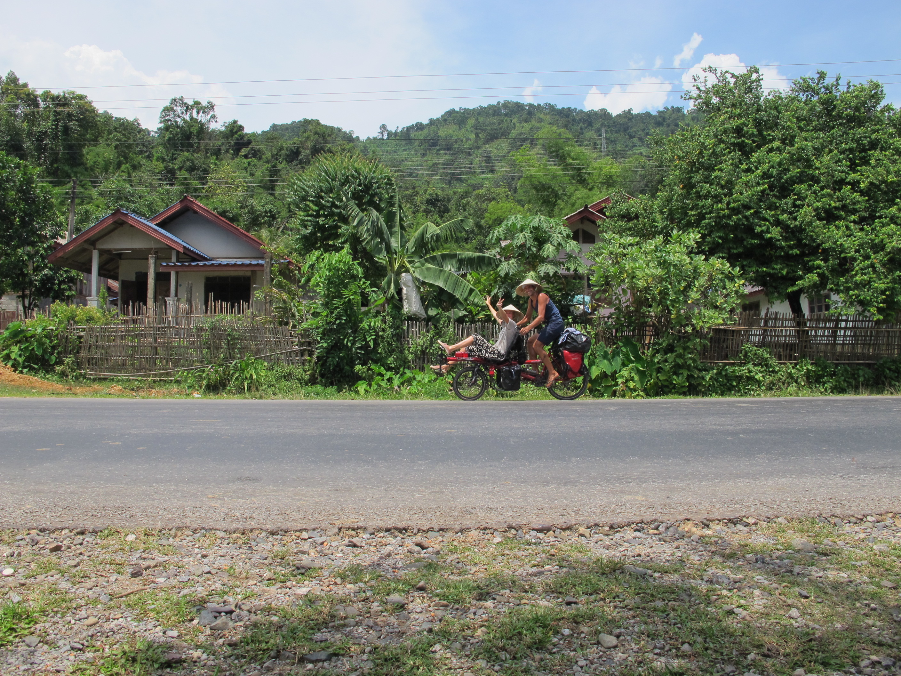A partir de Chiang Mai, nous partons vers le Laos et après une traversée de frontière kafkaïenne nous voila voguant sur le Mekong vers la ville très française de Luang Prabang. Nous passons quelques jours en compagnie de Zoé et Mathieu un couple en vadrouille en Asie du sud Est qui viendront, j’en suis sûr, augmenter le nombre de nos amitiés parisiennes.
Allez salut! Vous nous manquez!
20 juin 2015SMARTPHONES ET CHARS A BOEUFS
Hello les amis!
Nous voilà de retour en Europe ! Paris se rapproche à grand pas et cela nous fait osciller entre excitation et mélancolie. Mais pas de larmichettes, revenons au lointain Laos d'où nous avions écrit notre dernier récit:
A force de se laisser glisser le long du Mékong nous arrivons jusqu'à ses mille îles (et autant de hamacs) puis passons la frontière du Cambodge sans encombres. Nous ne sommes pas resté très longtemps au Cambodge mais nous avons apprécié la passion dévorante de ses habitants pour la sieste. A n'importe quelle heure les cambodgiens déambulent en pyjama, les yeux bouffis, et la bave au coin des lèvres de s'être trop balancé dans leur hamacs. Il n'est pas rare, en glissant un regard dans la "cuisine" d'un "restaurant", d'apercevoir deux ou trois corps enchevêtrés béats de plaisirs ensommeillés. Il existe un pays de Cocagne pour Marie, nous l'avons trouvé!
Après une visite éclair des temples d'Angkor nous sautons dans un bus et nous voilà de retour à Bangkok. Là bas nous échangeons notre vélo contre ma chère maman et nous envolons tous trois pour la Birmanie.
Arrivés à Rangoun nous sommes attirés pas un fait curieux. Les voitures roulent à droite mais les volant sont à gauche. Un obscur général inspiré par son horoscope a décidé, il y a de ça une trentaine d'années, de changer du jour au lendemain le sens de circulation. Ce simple fait illustre à lui seul l'incurie de la junte au pouvoir. La litanie de leurs exploits du même genre est époustouflante.
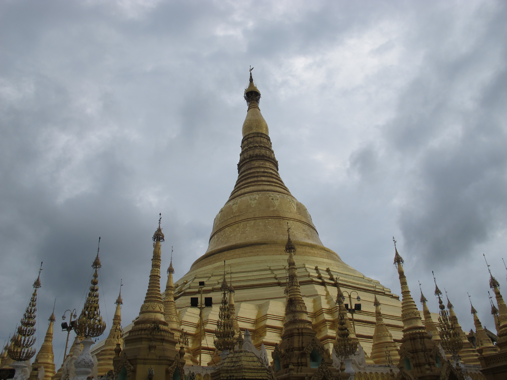La contrepartie est que le pays est resté isolé et les modes de vie très préservés. Au cours d'une lente descente sur le fleuve Irriwadi pour rejoindre Bagan sur un bateau de ravitaillement, nous avons pu observer les échanges de denrées et de matériaux, transbordés à la main sur des chars à bœufs. Étrange tableau que ces quelques touristes, entassés sur le pont du rafiot, ébahis par ce spectacle d'un autre âge. Il nous semble incongru et presque sacrilège de sortir nos smartphones pour immortaliser. Al'arrivée, les milliers de pagodes et temples dressés sur la plaine de Bagan sont le point d'orgue.
Mon père nous rejoint alors pour un treck de trois jours jusqu'au lac Inle. Les pêcheurs, funambules sur leurs barques, une pagaie entortillée sur une jambe et dans leur main des filets imposants évoluent gracieusement. Ici la vie tourne autour de ces eaux calmes, les potagers flottants à perte de vue, les maisons sur des hauts pilotis, les barques fines aux ras de l'eau. Tout cela témoigne d'un mode de vie rare dont on pressent qu'il va rapidement se muséifier.
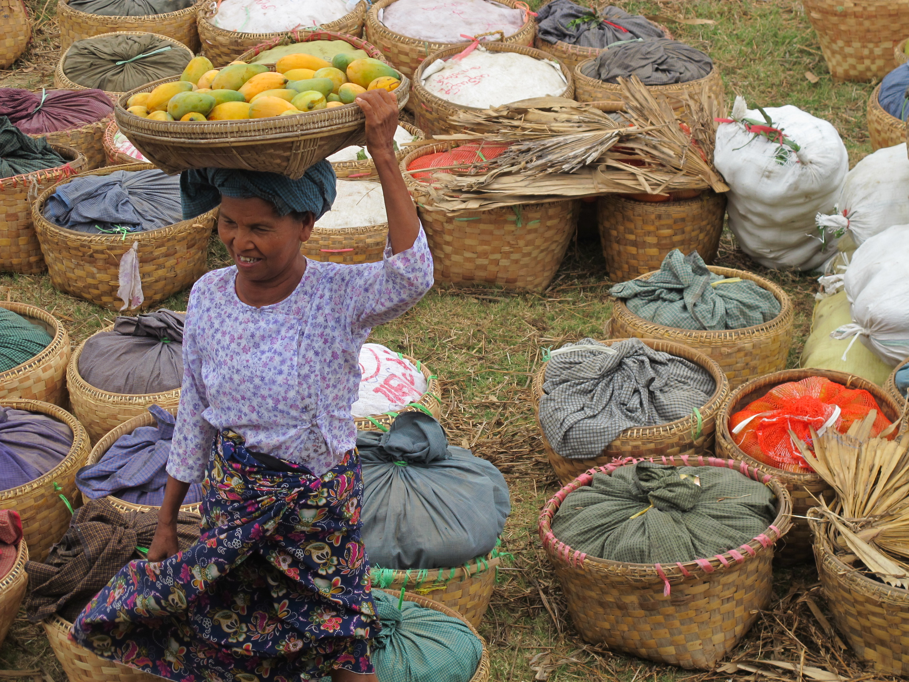Retour à Bangkok la frénétique cette fois ci pour récupérer notre vélo mis à neuf et clôturer la partie sud asiatique de notre voyage.
Un au revoir à mes parents et direction la Turquie ! Après deux jours de voyage nous voilà rentrés à la maison ! C'est en tout cas l'impression que nous avons en arrivant à Istanbul, nous ne nous attendions pas à cela mais, les paysages, la nourriture, les températures plus clémentes, le fait de n'être pas immédiatement reconnu comme un touriste, tout cela contribue à ce sentiment.
Après la visite d'Istanbul, magnifique, nous nous pénétrons en vélo dans la campagne turque pour rejoindre Gockëk au sud du pays. Là-bas nous attendent Damien, Céline, Olivier, Hermance et Augustin ainsi que la petite Olympe pour une semaine de voilier que nous attendions avec hâte. Sur la route nous tombons amoureux de la population. Les turques sont les gens les plus gentils du monde. Un soir de camping sauvage au bord d'un lac nous nous sommes retrouvés avec trois paysans qui après nous avoir nourris, rincés à la sangria, proposé de dormir chez eux et finalement aidés à trouver un emplacement idéal pour notre tente. Un d'eux a offert sa montre à Marie, un autre une nappe puis nous ont tous trois quittés en nous appelant leurs enfants. Une tornade de gentillesse qui, la suite nous le prouvera, n'était pas une anomalie.
Il est quasiment impossible de s'arrêter quelque part sans qu'un turc vienne offrir son aide, de la nourriture, un logement ou simplement une tasse de thé. C'est stupéfiant de régularité et vraiment très agréable. Cela aide à faire passer le relief qui est lui loin d'être aussi sympathique....
Une fois au sud de la Turquie nous voilà partis pour deux semaines de vrais vacances en voilier dans un premier temps entre les milliers de mouillages bordants la côte lyceene. Puis avec Quentin et Adélaïde dans un camping car racé poétiquement rebaptisé "camion poubelle" par Augustin. Deux semaines pour se rappeler ce que nous avons laissé à Paris.

Puisqu'il faut bien que cela se termine nous rejoignons l'île grecque de Kos à une vingtaine de miles au sud de bodrum. Nous voilà dans le ferry qui nous ramène au Pirée. Celui-ci a été investi par le centaines de migrants qui attendent leur tour. Nous avons tant bien que mal trouvé un coin pour dormir; nous avons connu des nuits plus confortables...
Allez salut ! Vous nous manquez.
HOME
Hello les Amis! Nous il nous reste deux jours de vélo avant de rentrer dans notre bonne ville de Paris.
La dernière partie du voyage à été moins exotique mais très belle et le climat beaucoup plus clément.
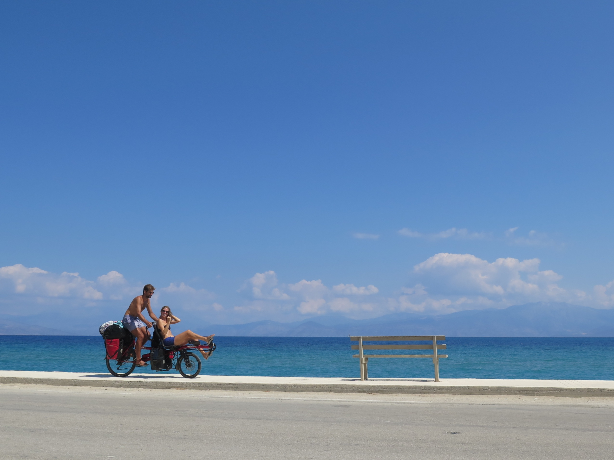De l'île de Kos nous avons pris un ferry pour le Pirée à Athènes puis nous avons longé la mer jusqu'a la côte nord du Peloponèse. Quel régal! Une route côtière au ras de l'eau qui saute de criques en criques. Nos bains fréquents dans l'eau claire nous permettent de rester continuellement humides.
Puis au bout du Péloponnèse il y a la mer... Nous avons donc pris les dernières places disponibles pour monter dans un ferry vers l'Italie. Ancona d'où nous remontons doucement la cote adriatique vers Venise.
Sur le trajet nous avons l'occasion de découvrir les vacances à l'italienne, Des plages insipides envahies de transats multicolores, des logements hors de prix, des échoppes criardes et des clubs de vacances dont le charme nous échappe. C'est une curieuse manière de passer son mois d'août et pourtant les italiens, hilares et très sympathiques, portant haut le slip de bain, en font les coqs sur le sable et semblent heureux.
Nous redécouvrons les étals des hypermarchés qui à nos estomacs frustrés font l'effet de parcs à thèmes. Saucissons, jambons de Parme, vin pétillant et mozzarelle transforment nos pic-niques en orgies et rendent la sieste incontournable.
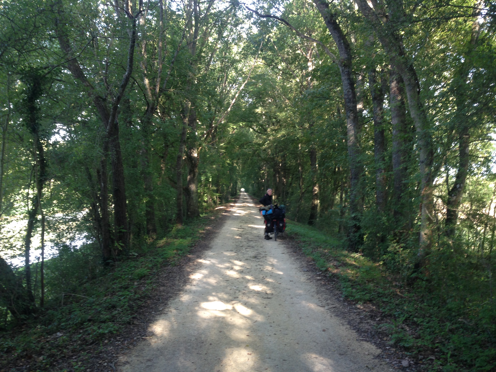Antoine ( mon frère) nous rejoins à Venise pour la traversée de la plaine du Pau. Les longues pistes cyclables ( que nous suivrons pratiquement jusqu'à Paris ) nous permettent de faire de longues distance rapidement. Et sur notre élan, de passer les Alpes pour rejoindre notre bonne vielle France et Grasse, ma ville de naissance pour quelques jours en famille.
Sur le trajet pour Paris nous nous régalons des boulangeries ou nous goinfrons de baguettes et viennoiseries. Le long du Rhône puis de la Loire les journée sont de plus en plus froides, notre très long été est bel et bien terminé...
Allez Salut! Vous nous manquez ( plus pour très longtemps)
Un grand merci à